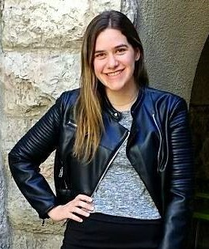

Mi nombre es Laura, soy de Buenos Aires y tengo 28 años
Educación: Secundario completo, Título técnico en Arteterapia, Postítulo de estimulación temprana, Curso de aplicaciones móviles con Flutter, Curso de programación orienda a objetos y principios SOLID en Udemy, Curso de algoritmos y desarrollo de la lógica de programación en Udemy, Curso de manejo de Visual Studio Code en Udemy,
No tengo experiencia laboral en programación
Skills: Dart, Flutter, JavaScript, HTML, CSS, Ingles y Hebreo
Hobbies: Bailar y cantar.